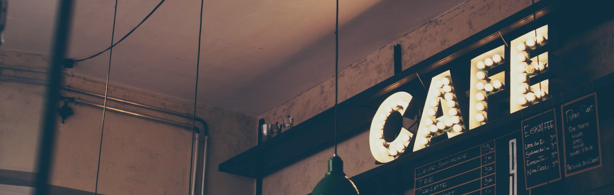
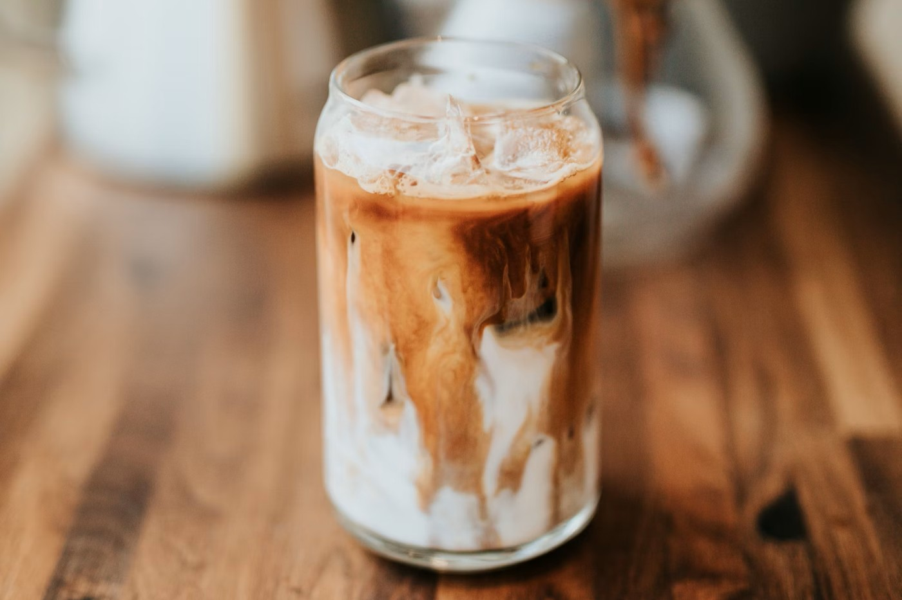
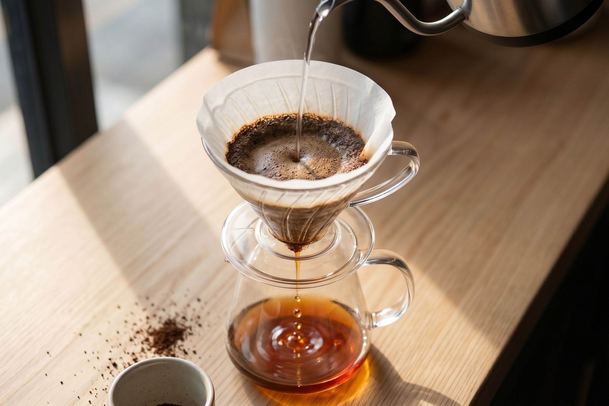
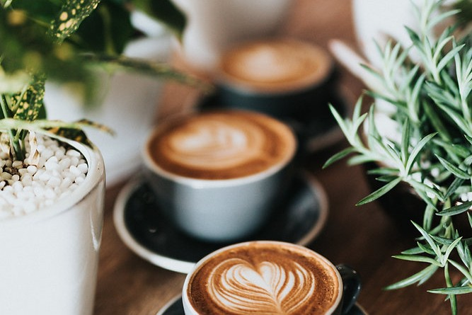
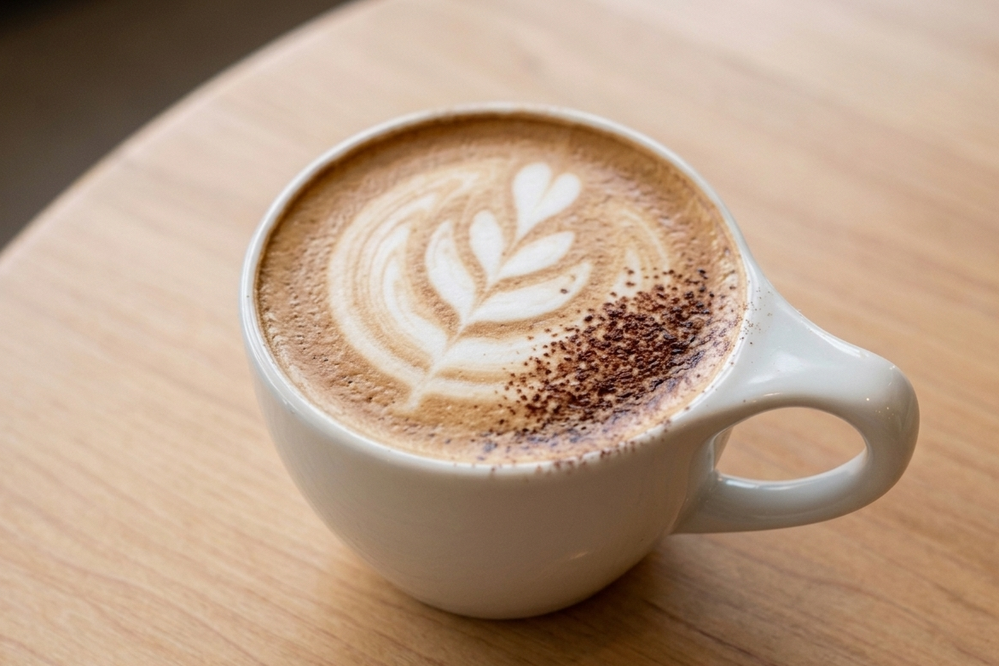
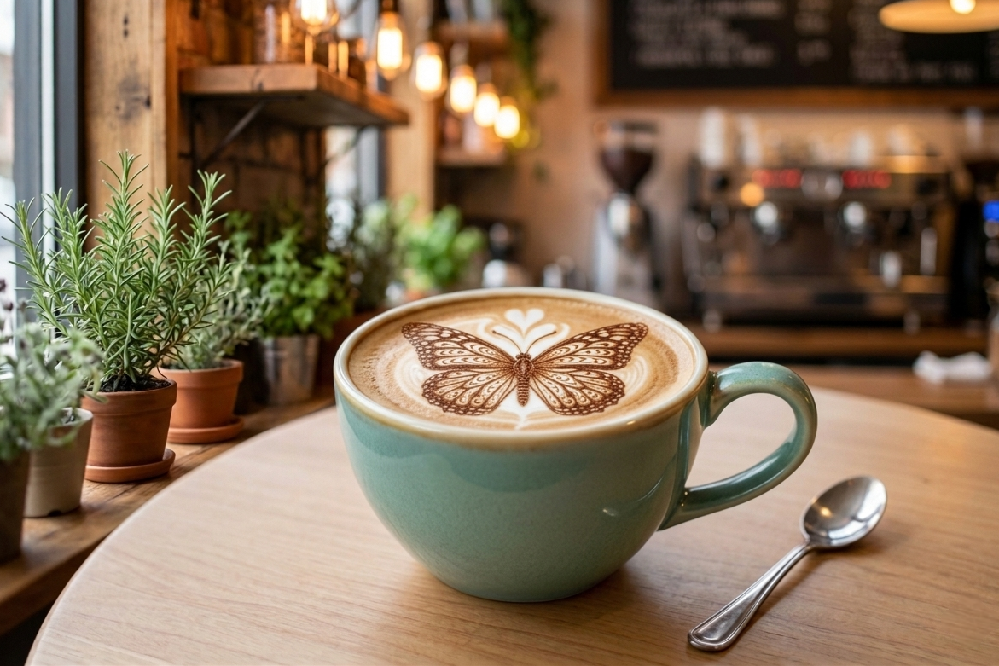
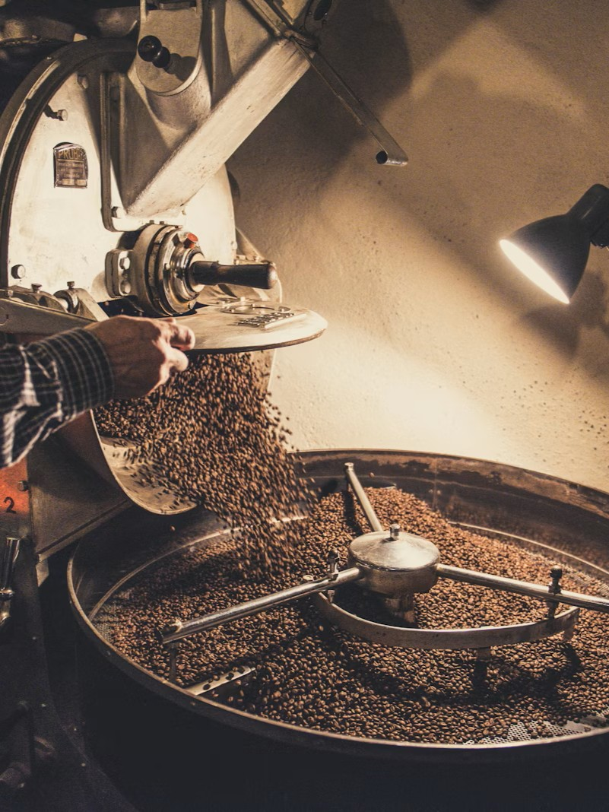

Más que café, un refugio
Descubrí qué se siente pausar el tiempo.
En la taza

Moca
Cacao artesanal y espresso intenso fusionados bajo una microespuma sedosa.

Café filtrado
Observa el ritual del vertido manual mientras se liberan notas florales y frutales.

Flat White
Doble ristretto abrazando la leche texturizada a la temperatura perfecta.

Capuccino
microespuma densa y aterciopelada corona un espresso intenso, creando la perfecta armonía de sabores

Latte
La elegancia del café premium combinada con una compleja obra maestra visual sobre la espuma.
LA ATMÓSFERA
diseñado para quedarte
Luz cálida, jazz suave de fondo y el aroma a granos recién molidos que te envuelve al entrar.
La experiencia de Ritual & Grano no termina en la taza. También vive en la madera clara, el silencio amable entre las mesas y el ritmo sereno del servicio.


Un interior que acompaña el ritual
Plantas, lino, cerámica y una luz natural controlada crean una sensación de refugio urbano pensada para quedarse un poco más.
Tu voz en nuestro espacio
✦ ✦ ✦ ✦ ✦
"El único lugar donde realmente puedo desconectar y disfrutar un café de verdad."
Sofía L.
✦ ✦ ✦ ✦ ✦
"La mezcla perfecta entre calidez, diseño y precisión en cada preparación"
Mateo R.
✦ ✦ ✦ ✦ ✦
"Venís por el café y terminás quedándote por la atmósfera. Tiene algo especial."
Julia A.
✦ ✦ ✦ ✦ ✦
"Se nota el amor y la precisión que le ponen a cada filtrado."
Valentina P.